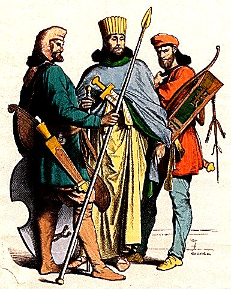

The concept of cookies can be traced
back to the 7th century, when Persia
(now known as Iran) began using sugar
in their baking. These early cookies
were much different than the version
we know and love today. In 14th century
Europe, "biscuits" started become popular.
These early cookies were somewhat similar
to what he have today, but they were harder
and crumblier. In the 17th century, sugar
become much more common and affordable in
Europe, and treats similar to cookies became
more common a well. In the 19th century,
immigrants brough their baking traditions to
America, and cookies became a staple of
North American cuisine. The word "cookie"
comes from the Dutch word "koekje" meaning
"little cake". The infamous chocolate chip
cookie we know today was accidentaly created
by Ruth Wakefield in 1938.